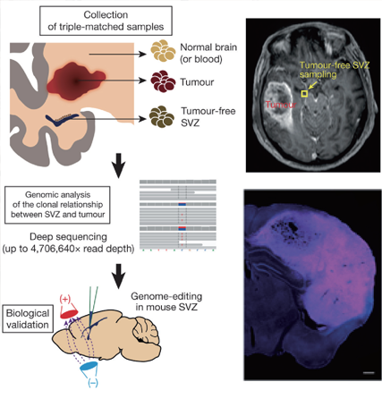

Report by Subjects
Report by Subjects
KAIST RESEARCH ACHIEVEMENTS
Identification of the Origin of Brain Tumors and New Therapeutic Strategy
Graduate School of Medical Science and Engineering Jeong Ho Lee
Summary
A research team led by Professor Jeong Ho Lee proved the origin of the mutation that drives various brain tumors and defined a new molecular pathogenesis of these conditions, thereby providing novel therapeutics.
1. Glioblastoma is treated with surgery to remove as much of the tumor as possible, followed by radiation and chemotherapy. However, the tumor almost always grows back in less than a year and the median survival time is only 15 months. Precision therapeutic approaches that directly targeted tumors did not lead to any breakthroughs for glioblastoma. The research team led by Professor Jeong Ho Lee identified where the mutation that causes glioblastoma originates. According to the study, neural stem cells away from the tumor mass are the cells of origin that contain mutation drivers for glioblastoma, the most aggressive brain tumor. This breakthrough research, reported in Nature on August 1st, 2018, provides insight for understanding why glioblastoma almost always grows back, even after surgery, and suggests novel methods to treat glioblastoma, which was previously thought to be incurable.
2. Pediatric brain tumors are characterized by the frequent complications of intractable epilepsy compared to adult brain tumors. However, the genetic cause of refractory epilepsy in pediatric brain tumors has yet to be elucidated, and it is difficult to treat patients as the tumors do not respond to existing antiepileptic drugs and can debilitate a child’s development. The research team led by Professor Jeong Ho Lee has recently identified that neuronal BRAF somatic mutation causes intrinsic epileptogenicity in pediatric brain tumors. Their research results were published online in Nature Medicine on September 17th, 2018.
Background
There are no suitable treatment methods for tumors originating from adult and pediatric brains due to the lack of understanding about the underlying cause and mechanism of the disease. Professor Lee Jeong ho's team studied mutations occurring in the development and aging process of human brains and identified the origin of mutations that cause pediatric brain tumors and adult malignant brain tumors, the mechanism of molecular genetic pathogenesis, and new therapeutic methods.
Identifying the basic cause of adult malignant brain tumors and presenting new therapies. Glioblastoma is one of the worst prognostic cancers, and we currently have a poor understanding of the underlying cause of tumorigenesis. Surgical resection is the treatment of choice, but glioblastoma is incurable by surgery alone as well as concurrent chemo- or radiation therapy. For the first time in the world, it was discovered that a glioblastoma driving mutation originates from the subventricular zone, which is far from the cancer, instead of the cancerous site itself. (Published in 2018 Nature) Identifying the root cause of pediatric brain tumors accompanied by intractable epilepsy and presenting a new treatment method. Pediatric brain tumors are characterized by frequent complications of intractable epilepsy compared to adult brain tumors. The specific cause of intractable epilepsy in pediatric brain tumors has not been elucidated and the tumors do not respond to existing anticonvulsant drugs, rendering treatment difficult. This study demonstrates the underlying causes and the developmental principles of such pediatric brain tumors, and presents a new therapeutic method. (Published in 2018 Nature Medicine).
 Fig. 1. Schematic presentation of the experimental design of this study, comprising deep sequencing analysis of triple-matched tissues followed by biological validation.
Fig. 2. Biological modeling of epilepsy causing pediatric brain tumor and its epileptogenic mechanism following analysis of patient-driven tissue.
Expected effect
- Identifying the basic cause of adult malignant brain tumors and presenting new therapies. This is a breakthrough study that investigated the genetic causes of glioblastoma, which is expected to lead to new treatment methods based on the novel idea that cancer is initiated in the subventricular zone beyond the limits of existing therapies and research. Identifying the root cause of pediatric brain tumors accompanied by intractable epilepsy and presenting a new treatment method. The results contribute to the treatment of intractable epilepsy comorbid with pediatric brain tumors, which is difficult for surgical treatment.
Research Outcomes
[Paper 1] Lee et al, Human glioblastoma arises from subventricular zone cells with low-level driver mutations. Nature. 2018 Aug;560(7717):243-247. (IF=41.6)
[Paper 2] Koh et al, BRAF somatic mutation contributes to intrinsic epileptogenicity in pediatric brain tumors. Nature Medicine. 2018 Nov;24(11):1662-1668. (IF=32.6)
Research Funding
Suh Kyungbae Foundation
IBS-R002-D1
Korean Health Technology R&D Project, Ministry of Health & Welfare (H15C3143 and H16C0415)
Citizens United for Research in Epileps